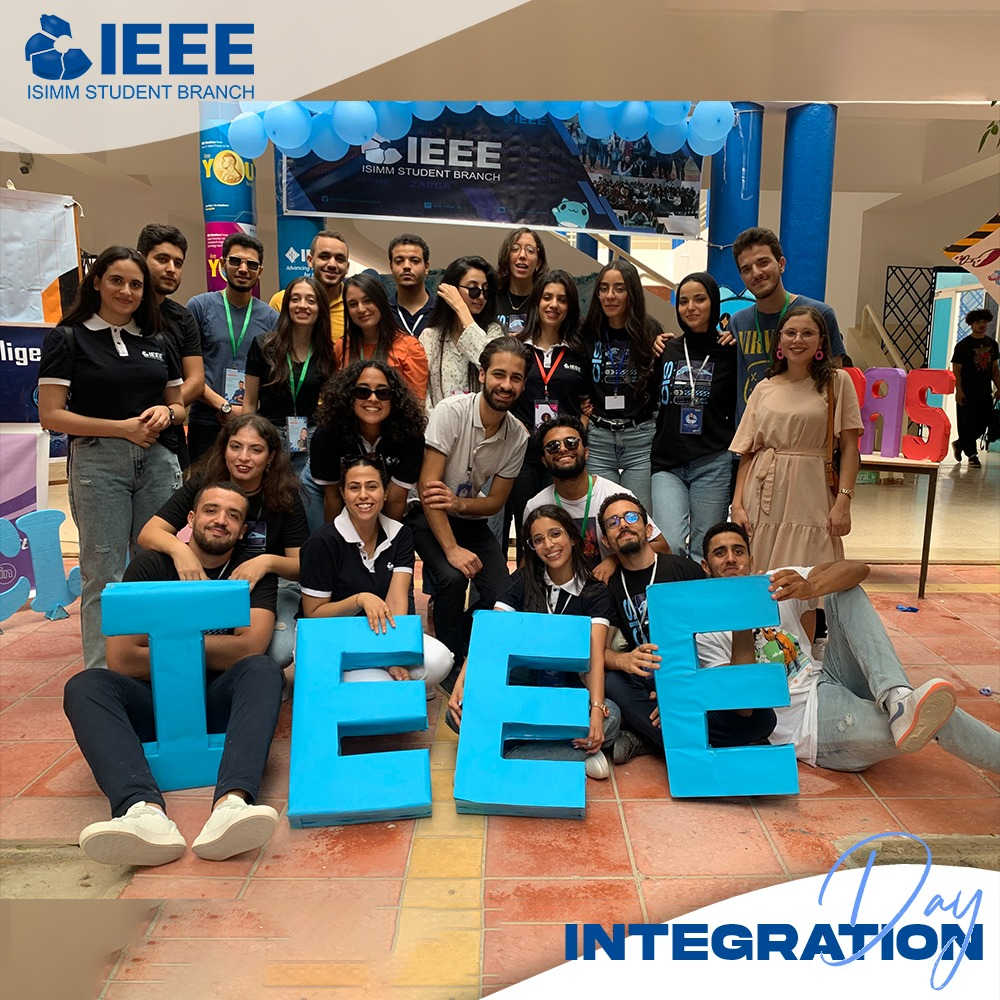
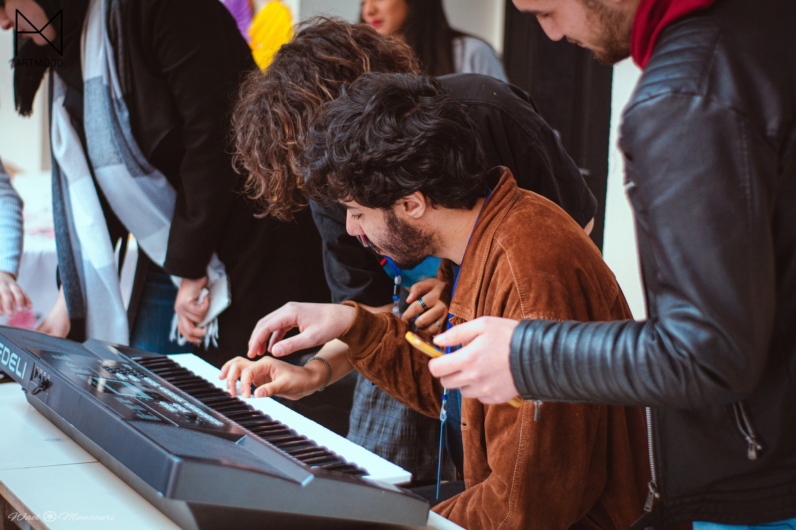
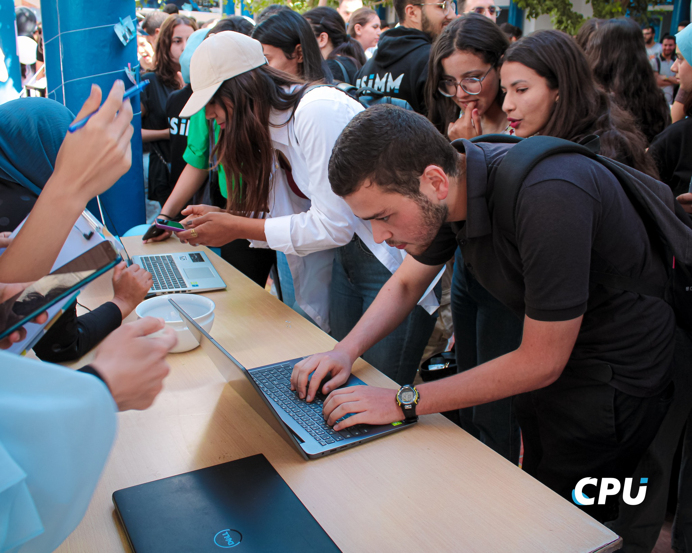
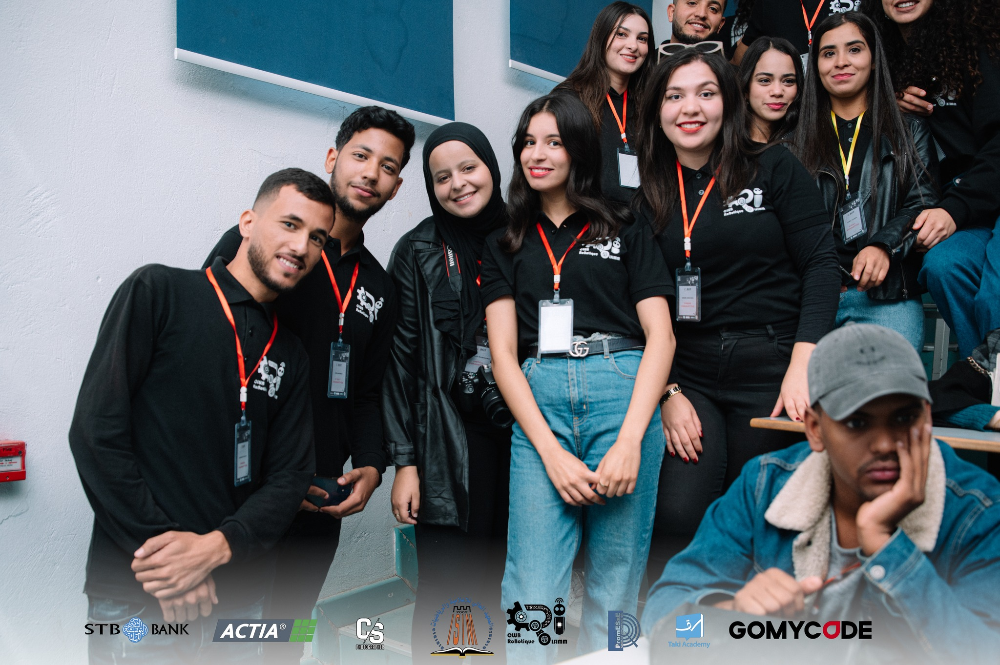
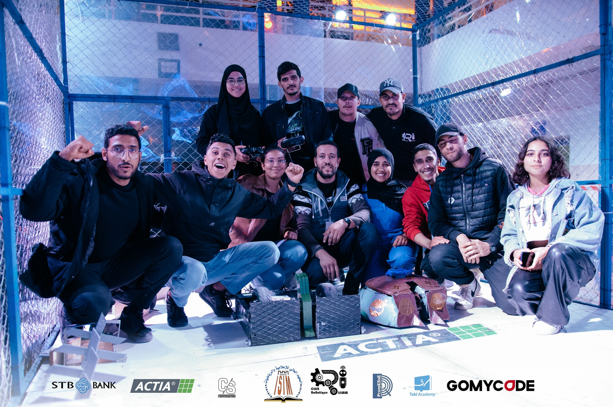
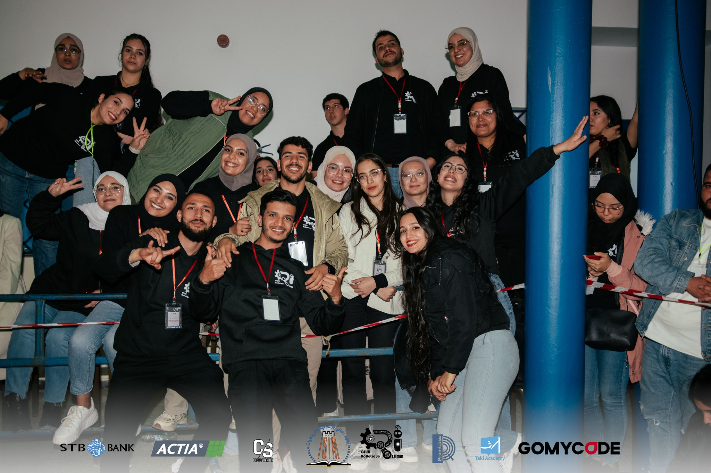
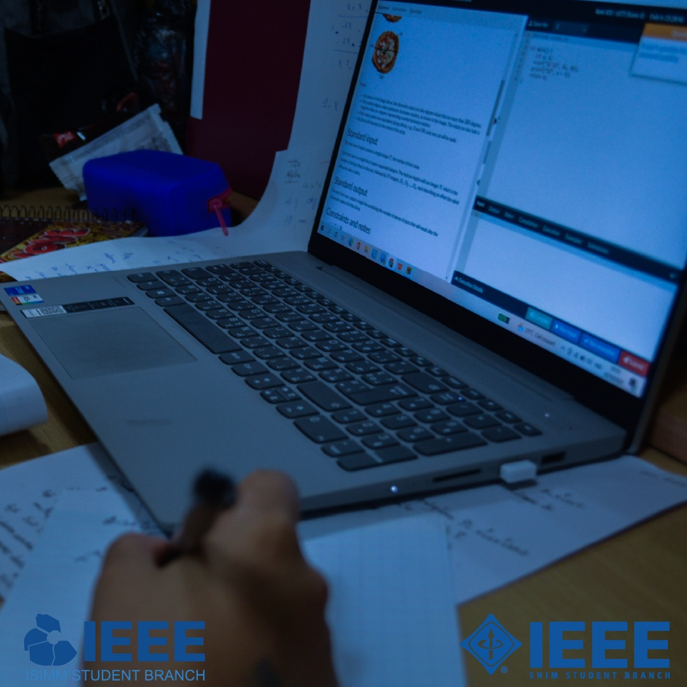
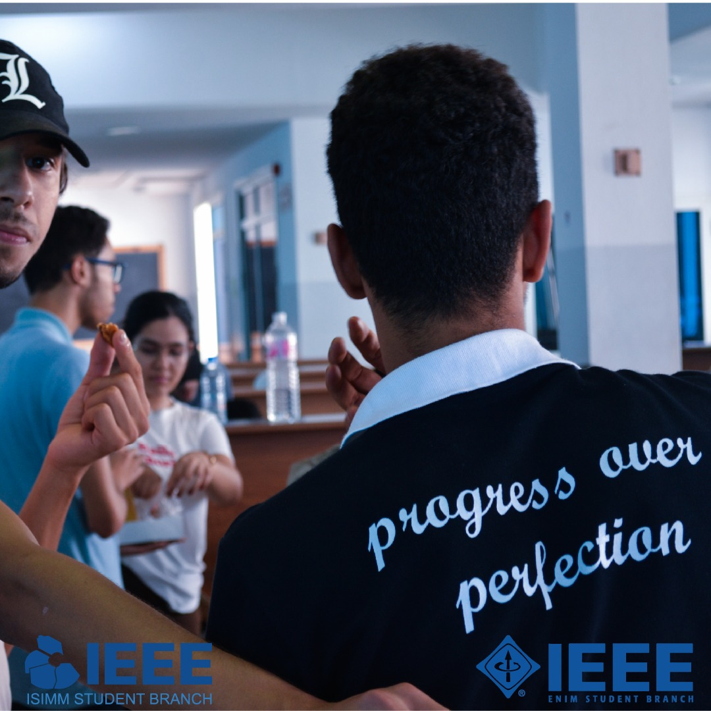
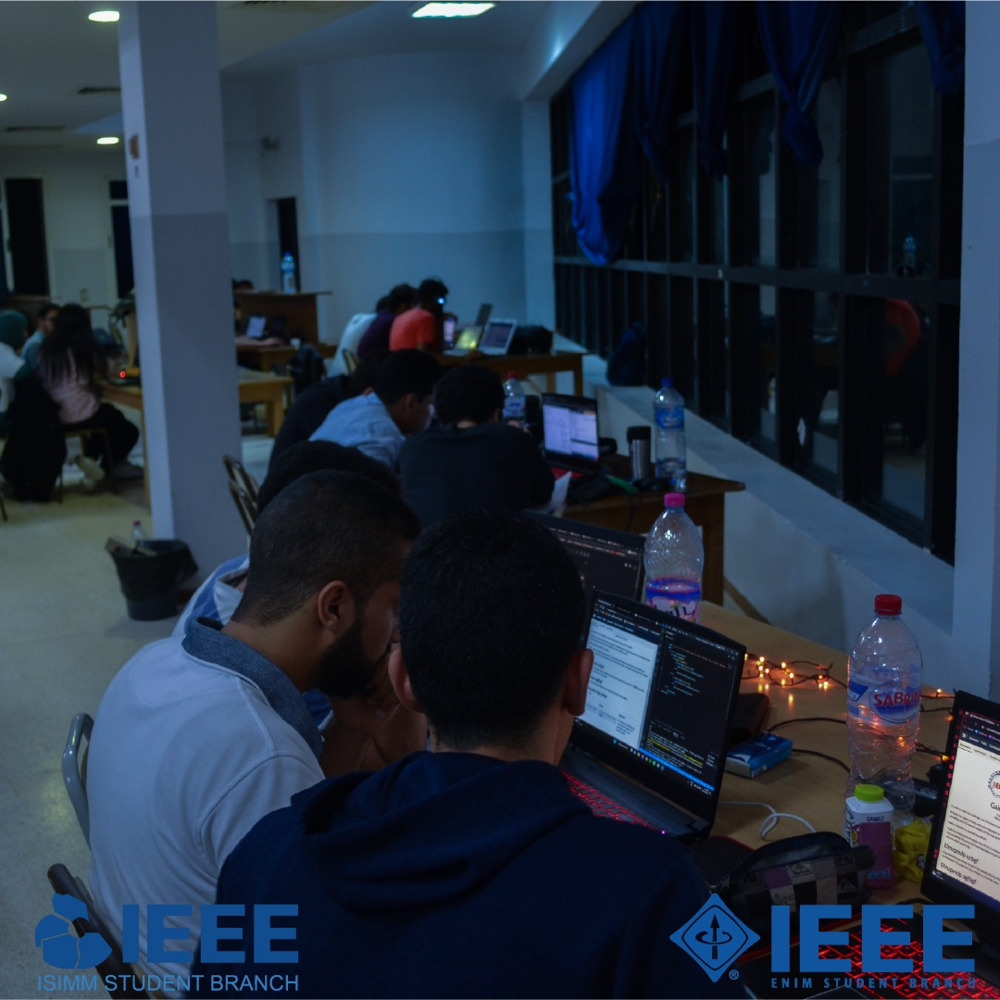

Les événements à l'ISIMM sont une célébration dynamique de l'innovation et du talent, comprenant des compétitions de programmation,
des défis de robotique, et bien d'autres activités captivantes .
Notre université est un foyer dynamique d'activités intellectuelles et créatives, se démarquant par la richesse de ses événements et compétitions tout au long de l'année. Au-delà des manifestations inaugurales et des formations conventionnelles, nous sommes particulièrement fiers des événements organisés par nos propres étudiants. Des compétitions de programmation stimulantes aux défis de robotique innovants, ces initiatives étudiantes témoignent de la vitalité et de l'ingéniosité qui caractérisent notre communauté académique. Ces événements ne se limitent pas aux enceintes de notre université ; ils captivent également l'attention des médias, illustrant la reconnaissance et la portée de notre engagement dans l'excellence académique et la créativité. C'est cette fusion unique d'événements étudiants et d'une couverture médiatique significative qui fait de notre université un lieu exceptionnellement stimulant et influent pour l'épanouissement académique et personnel.
Les journées d'intégration à notre université sont bien plus que de simples événements ; ce sont des moments mémorables qui marquent le début d'un parcours académique enrichissant. Conçues pour favoriser la cohésion, de jeux collaboratifs et de rencontres entre étudiants, créant ainsi une atmosphère propice à l'échange et à la formation de liens durables.Ces journées d'intégration reflètent notre engagement envers le bien-être et le succès de chaque étudiant tout au long de son parcours universitaire.



Parmi les événements phares organisés au sein de notre faculté, l'événement "ISIMM Cyber Bot" se démarque chaque année. Cet événement captivant est dédié à la robotique et englobe une variété de sous-compétitions, notamment le tout-terrain, les combats de robots, la catégorie junior, et bien d'autres.
Découvrez également notre passionnante compétition "CRBOT ISIMM" qui met en avant l'ingéniosité des étudiants dans le domaine de la robotique. Des épreuves stimulantes et des créations innovantes font de cette compétition un événement à ne pas manquer.



En plus des compétitions de robotique qui mettent en lumière l'ingéniosité de nos étudiants, nous accueillons également l'IEEXtreme, une compétition de coding de 24 heures organisée par le club IEEE. Cette compétition offre une expérience immersive où les esprits brillants s'affrontent dans des défis de programmation exaltants. Ces événements dynamiques dépassent les frontières académiques, offrant aux étudiants une plateforme pour explorer, innover et célébrer leurs talents.


